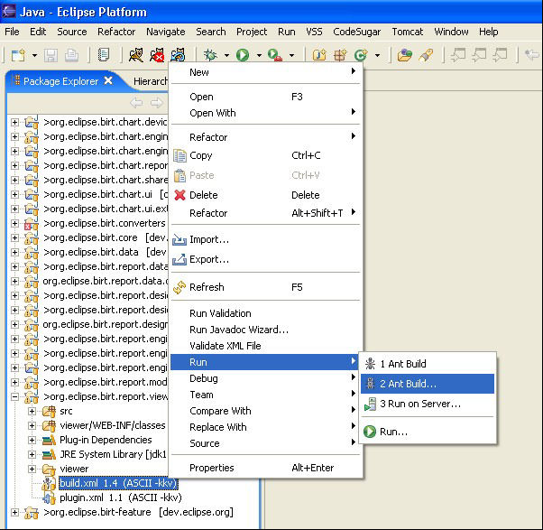
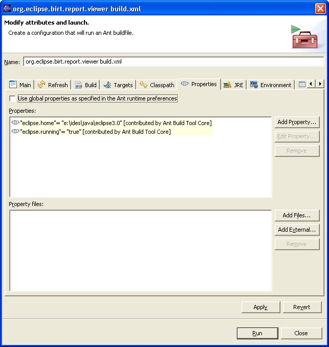
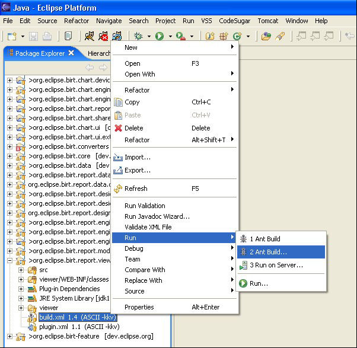
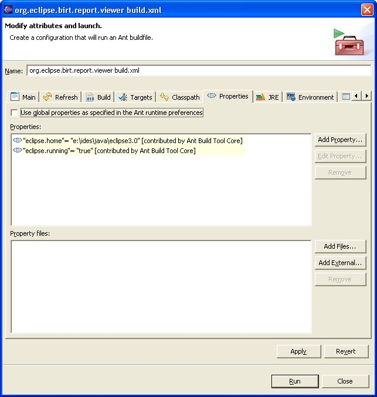

6. Preparing the viewer
To include all the required project libraries under the viewer's WEB-INF folder, you must build the viewer separately.
The viewer project contains an ant build script that performs this task. To use this script, perform the following steps:
1) In Package Explorer, expand the org.eclipse.birt.report.viewer project.
2) Right-click the build.xml file. From the context menu, choose Run -> Ant Build.

3) In org.eclipse.birt.report.viewer build.xml, select the Properties tab. Unselect Use global properties specified in the Ant runtime preferences, as shown in the following illustration.

4) This script is configured to work with Eclipse 3.0. If you are using a higher version, you need to add a property called eclipse.version.
The ant build of the viewer runs in the console.
1) In Package Explorer, expand the org.eclipse.birt.report.viewer project.
2) Right-click the build.xml file. From the context menu, choose Run -> Ant Build.

3) In org.eclipse.birt.report.viewer build.xml, select the Properties tab. Unselect Use global properties specified in the Ant runtime preferences, as shown in the following illustration.

4) This script is configured to work with Eclipse 3.0. If you are using a higher version, you need to add a property called eclipse.version.
-
a) On the Properties tab, choose Add Property. Add Property appears.
b) In Name, type:
-
eclipse.version

d) Choose OK.
The ant build of the viewer runs in the console.